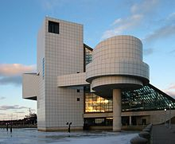
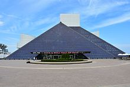

Achievments
Founder Ahmet Ertegun assembled a team that included attorney Suzan Evans, Rolling Stone magazine editor and publisher Jann S. Wenner, attorney Allen Grubman, and record executives Seymour Stein, Bob Krasnow, and Noreen Woods. The Foundation began inducting artists in 1986, but the Hall of Fame still had no home. The search committee considered several cities, including Philadelphia (home of Bill Haley and American Bandstand), Memphis (home of Sun Studios and Stax Records), Detroit (home of Motown Records), Cincinnati (home of King Records), New York City, and Cleveland.[citation needed]

Cleveland lobbied for the museum, citing that WJW disc jockey Alan Freed both coined the term "rock and roll" and heavily promoted the new genre—and that Cleveland was the location of Freed's Moondog Coronation Ball, the first major rock and roll concert. In addition, Cleveland cited radio station WMMS, which played a key role in breaking several major acts in the U.S. during the 1970s and 1980s, including David Bowie, who began his first U.S. tour in the city, Bruce Springsteen, Roxy Music, and Rush among many others.[2] Cleveland was also one of the premier tour stops for most rock bands.
Civic leaders in Cleveland pledged $65 million in public money to fund the construction. A petition drive was signed by 600,000 fans favoring Cleveland over Memphis, and Cleveland ranked first in a 1986 USA Today poll asking where the Hall of Fame should be located. On May 5, 1986, the Hall of Fame Foundation chose Cleveland as the permanent home of the Rock and Roll Hall of Fame and Museum. Sam Phillips of Sun Studios fame and many others were stunned and disappointed that it ended up in Cleveland. "The hall of fame should've been in Memphis, certainly," wrote Peter Guralnick, author of an acclaimed two-volume Elvis Presley biography.[3]

Cleveland may also have been chosen as the organization's site because the city offered the best financial package. As The Plain Dealer music critic Michael Norman noted, "It was $65 million... Cleveland wanted it here and put up the money." Co-founder Jann Wenner later said, "One of the small sad things is we didn't do it in New York in the first place," but then added, "I am absolutely delighted that the Rock and Roll Hall of Fame and Museum is in Cleveland."
During early discussions on where to build the Hall of Fame and Museum, the Foundation's board considered the Cuyahoga River. Ultimately, the chosen location was along East Ninth Street in downtown Cleveland by Lake Erie, east of Cleveland Stadium.
At one point in the planning phase, when a financing gap existed, planners proposed locating the Rock Hall in the then-vacant May Company Building, but finally decided to commission architect I. M. Pei to design a new building. Initial CEO Dr. Larry R. Thompson facilitated I. M. Pei in designs for the site. Pei came up with the idea of a tower with a glass pyramid protruding from it. The museum tower was initially planned to stand 200 ft (61 m) high, but had to be cut down to 162 ft (49 m) due to its proximity to Burke Lakefront Airport. The building's base is approximately 150,000 square feet (14,000 m2). The groundbreaking ceremony took place on June 7, 1993. Pete Townshend, Chuck Berry, Billy Joel, Sam Phillips, Ruth Brown, Sam Moore of Sam and Dave, Carl Gardner of the Coasters and Dave Pirner of Soul Asylum all appeared at the groundbreaking.
The museum was dedicated on September 1, 1995, with the ribbon being cut by an ensemble that included Yoko Ono and Little Richard, among others, before a crowd of more than 10,000 people. The following night an all-star concert was held at the stadium. It featured Chuck Berry, Bob Dylan, Al Green, Jerry Lee Lewis, Aretha Franklin, Bruce Springsteen, Iggy Pop, John Fogerty, John Mellencamp, and many others.
In addition to the Hall of Fame inductees, the museum documents the entire history of rock and roll, regardless of induction status. Hall of Fame inductees are honored in a special exhibit located in a wing that juts out over Lake Erie.